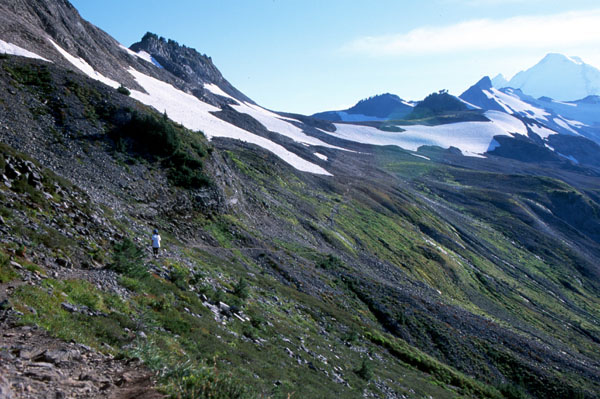
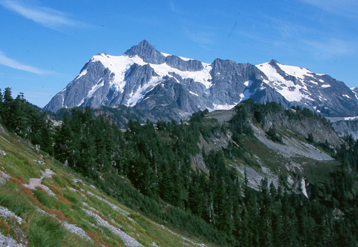
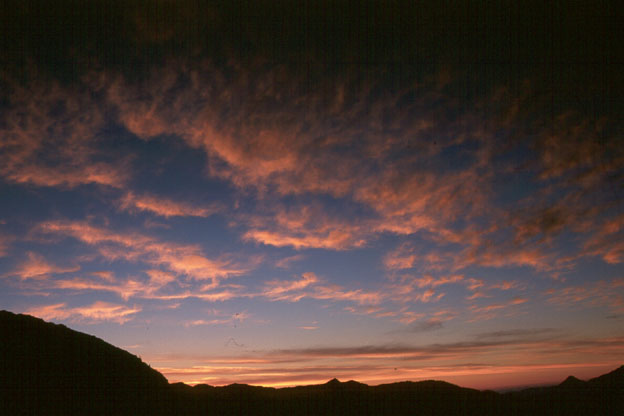
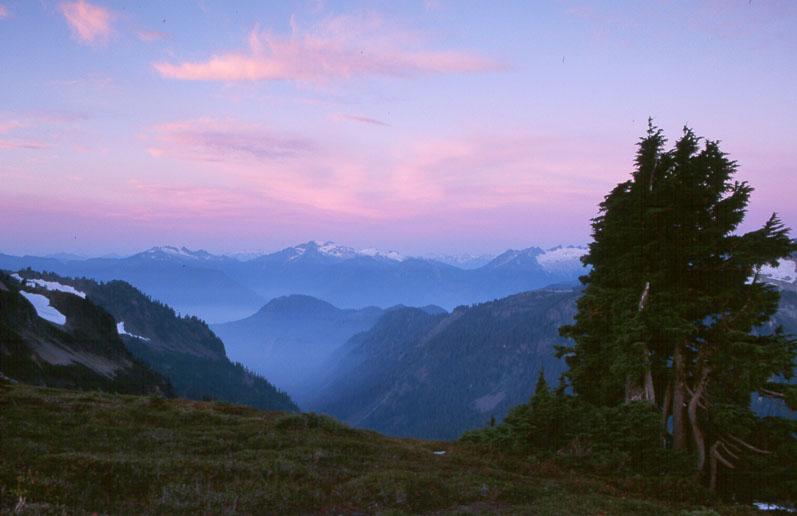
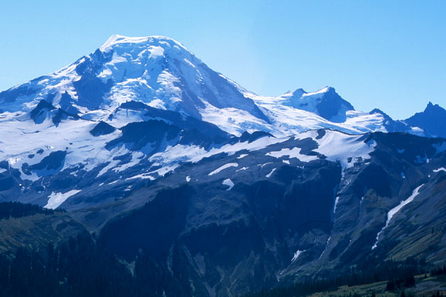
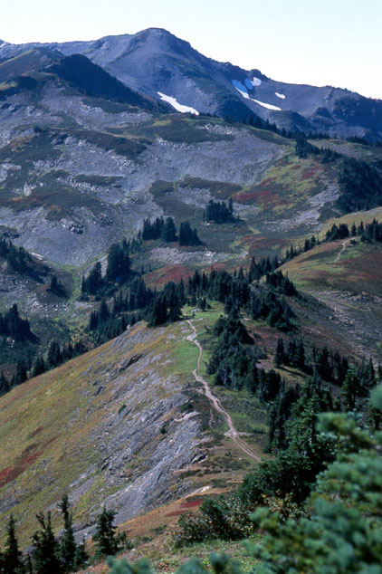
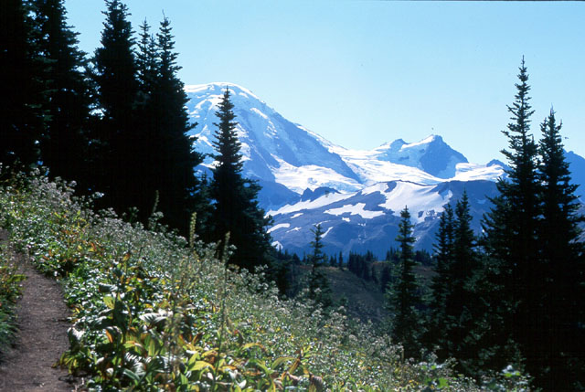

Mount Baker Hiking
- September 15-16, 2001
Ptarmigan Ridge
Kris and I spent the weekend hiking at Mt. Baker in beautiful weather. We arrived at Artists Point in late afternoon, and hiked to a viewpoint on Ptarmigan Ridge. We watched the sunset and took pictures, having lots of fun sitting around waiting for the sunset, playing with rocks and hugging. I think my favorite picture that Kris took is of the valley in the evening light. Pink sky above, dark valley below, but with a magical mist hovering in it.




Descending in the dark was interesting, especially crossing a snowfield. Kris was worried at first on the near-frozen neve, but the angle was low enough that we could hop from bulge to bulge on the steeper parts. We had the moon to keep us company. At the parking lot, a consortium of astronomers were setting up telescopes and drinking alcoholic beverages. They invited us to look at Saturn and a few other things. That was awesome! We left them to their revelry and drove back to Bellingham to find a cheap motel room.
Skyline Divide
The next day, we hiked up the Skyline Divide. I had been entranced by pictures of the long ridge in the hiking guide book. We drove up a steep gravel road to reach the trail-head. The hike up out of the timber seemed long, but we were visited by the most outrageous band of “camp robbers” we’d ever seen. If they saw us at a higher switchback, they would zoom up through the trees, twittering and convulsing with anticipation they were nearly driven mad! We finally reached the glorious meadow country, and let the birds land on us for some snacks. Kris was sleepy, so I left her to a nice, sunny nap in the grass. I jogged along to the high point of the ridge. Nice shots of the north side of Mt. Baker were available. Of course, on both of these hikes, I wanted to continue straight to the mountain and climb it. Ptarmigan Ridge would be an especially nice approach. (Doxey Kemp did this summer 2002, but the bergschrund was too wide to cross on the upper mountain).



I rejoined Kris and napped with her awhile. Warm sun, high meadows and dry ground are an especially delicious combination for denizens of western Washington!
At the car we discovered a flat tire. “Easily fixed,” I thought as I began removing the bolts. One of the bolts required a “key,” which I affixed between the tire iron and said bolt. With a bit of muscle to turn the bolt and key, I heard a snap, and saw a portion of the bolt fall to the ground. With the bolt broken, there was no way to remove the tire!
How could a steel bolt break? What a disaster!
We called a tow truck driver in Bellingham. He said he could tow us for $250.00, and we’d have to stay overnight in Bellingham and miss work on Monday so a repair shop could bash the bolts into pieces.
A bystander (we now had a small crowd, most of whom would watch sadly for a minute, shake their heads and walk away) suggested a can of air which could fill a tire. Good idea! Someone else had one! But it was mostly empty, and didn’t fill the tire enough to make it down the gravel road.
So now we asked people coming out of the trail for canned air. No such luck. As we were getting ready to sadly call the tow truck, a huge white pickup truck drove up. The driver had canned air! With the 7 inch buckskin knife strapped to his belt, he gave us his can of air and drove away a hero, because it was sufficient to get us all the way home to Woodinville.